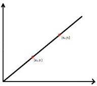

Question 1
Given points (x
1
, y
1
) and (x
2
, y
2
), select the formula to find the equation of the given line:
y = mx + b
(x - h)
2
+ (y - k)
2
= r
2
y - y
1
= m(x - x
1
)
y - y
2
= (y
2
- y
1
) / (x
2
- x
1
)(x - x
2
)
Submit & Next Question
Cancel & Clear Selection
